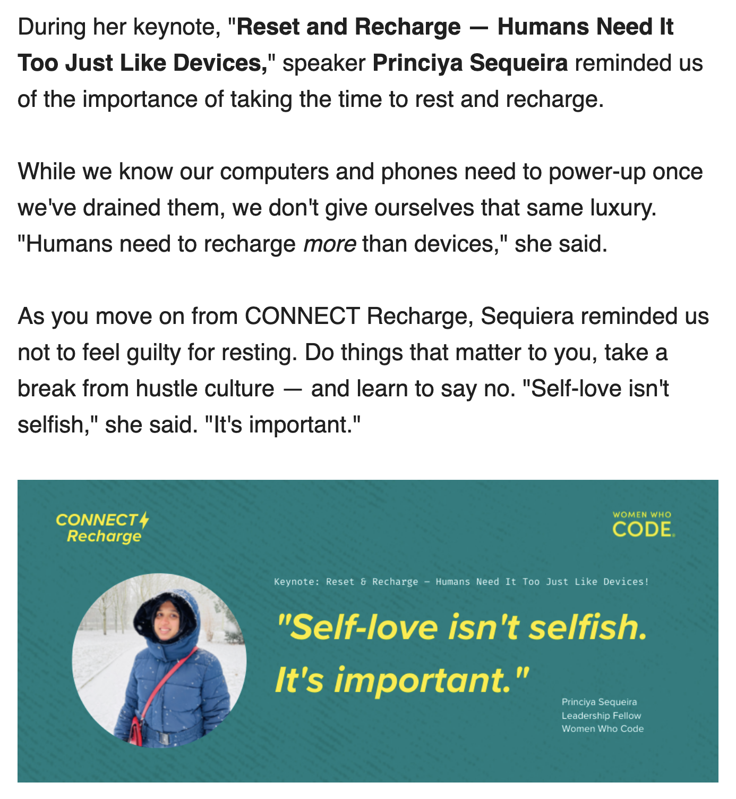

How I spent my holiday
Posted on Fri 27 May 2022 in Journal
It is a 4-day long weekend. Yesterday, 26th May was a German public holiday, and today is a snake day holiday from Anaconda.
I spent the entire day yesterday preparing for my keynote talk at WWCode Connect 2022, which was very well received. There was a lot of positive feedback and appreciation. Personally, I am very happy with this talk.
Snake days at Anaconda
At Anaconda, we have a snake day holiday every month. In Germany, in addition to the 30 day annual leave, we also get snake day holidays. So we have 30 + 12 days of annual leave at Anaconda.
We are hiring at Anaconda, do check open roles or contact me if you are interested.
What did I do today
I woke up late and got to my desk only an hour ago. At the time of writing this post, it is 17:04 CET.
I have been browsing random things, looking at some home office furniture to buy.
I watched a little bit of Bling Empire on Netflix earlier today. Riverdale, Bridgerton are on my list. I cannot believe Riverdale has a new season 6!
I have been following up on social media from yesterday's keynote comments and feedback.
The following was sent on today's WWCode newsletter, and I have been cross-posting this on my social media.

9 months at Anaconda
When I have long weekends, I also sit and think about my career. Today was analysing how are things for me at Anaconda. I have been with Anaconda for 9 months now and things are really good, I am happy about my progress overall and the kind of problems I get to solve on a daily basis. There is so much learning happening everyday and so much work getting done.
Everyday I look forward to growing in my career, one step at a time.
My reading list
I read a few articles from Leaddev today.
I am now reading few system design articles from ByteByteGo.
I was following updates from InvactMetaversity, looks like the drama has been resolved today.
Will I have my own startup
I often think to myself, if I were to build something what would that be? I still have not found any answer.
I do occassionally come up with ideas and think they could be the next big thing. The following were the ones where I came close to get them executed, but did not. Obviously, had I done, it would have already been the next big thing :D.
- Portal to connect midwives and new moms
- Automatic blog generator based on the content read or written for that week
Grow in my career
While I am not sure about a startup, I am definitely aiming to grow in my career and I do believe I am in the right track!
Director > VP > CTO